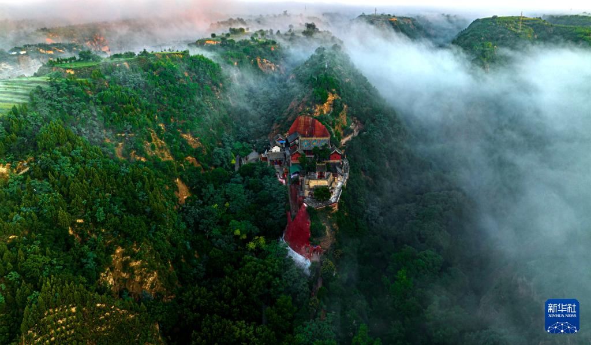
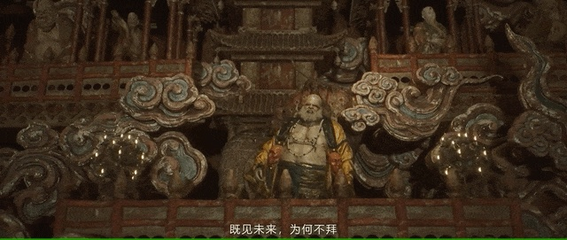

同一座殿堂，多种文化相遇。
长治观音堂创建于1582年。其殿内的明代彩塑与悬塑，把儒、释、道造像组织在同一建筑空间中。这里提示我们：理解悬塑，不仅要辨识人物，还要观察不同思想与图像如何在地方社会中相遇。
看点：从密集造像中寻找人物姿态、服饰和位置的差别。
史料与阅读 ↗图片：长治日报 / 长治市政府网站第一卷 · 山门初见
01 / ORIGINS在山西隰县凤凰山上，小西天静静伫立。它原名千佛庵，创建于明崇祯二年（1629年）。这里不以恢宏的体量取胜，而以层层叠叠的悬塑，将楼阁、云气与众生汇成一座立体的东方幻境。

近一点，看见千年。
THE ART OF ABUNDANCE从满堂繁华，到一片衣纹。
点击任一照片，打开可缩放的赏鉴画框。
实景照片：澎湃新闻《取景地山西，中国悬塑艺术最后的绝唱》图集；原文图片来源：视觉中国、IC。照片保留原有色彩。
第二卷 · 仰观万象
02 / SUSPENDED SCULPTURE轻触画中标记，从三个角度读懂满堂悬塑。
探索全部标记，收集「观境」印章。
图源：澎湃新闻 / 视觉中国、IC。热点为艺术观察导览，点击时会以不同色彩回应。
单尊造像塑出人物，满堂悬塑则把人物、楼阁与山川组织在同一空间。抬头与转身之间，观看本身成了阅读故事的过程。
大与小、前与后、静坐与飞动彼此映衬。云纹和衣带像流动的线，把分散的形象连接起来，让目光在殿堂中游走。
悬塑把佛教的净土想象转化为可见的山川楼阁，也把工匠对神情、衣饰和生活的观察留在泥土中。神圣与日常，在这里相遇。
第三卷 · 泥土生花
03 / THE CRAFT从支撑到敷彩，平凡材料凝成不凡想象。
选择一道工序，看看造像如何逐步成形。
深读卷 · 泥土里的文明
HISTORY · CRAFT · CULTURE一门技艺的来路，一代代人的创造。
循着时间、材料与故事，读懂悬塑背后的中华底蕴。
彩塑以塑造的形体与表面彩绘共同表现形象；悬塑则依托建筑的墙壁、梁架等展开，把人物、山石、云气、楼阁组织成向空间伸展的场景。它的“凌空”感，背后是支撑、连接与布局的共同作用。
与主要附着于平面的浮雕相比，悬塑常呈现更强的前后层次；但圆塑、浮塑与悬塑也会在一座殿堂里相互配合。欣赏时，既看一尊造像的神情，也看整座殿堂如何成为一个整体。
延伸阅读 · 科普时报 ↗壹 / 沿时间寻迹
从传统彩塑的塑绘经验，到寺观中与建筑相融的立体场景，悬塑的历史需要结合实物、题记与文献来理解。下面四个切面连接明代遗存与当代传承，并不把某一处古迹的创建当作这门技艺的起源。

长治观音堂创建于1582年。其殿内的明代彩塑与悬塑，把儒、释、道造像组织在同一建筑空间中。这里提示我们：理解悬塑，不仅要辨识人物，还要观察不同思想与图像如何在地方社会中相遇。
看点：从密集造像中寻找人物姿态、服饰和位置的差别。
史料与阅读 ↗图片：长治日报 / 长治市政府网站贰 / 看泥土成形
木骨、纤维、泥层与彩绘各司其职。点选一种材料，看看它如何参与造像。这里呈现传统木骨泥塑的一般原理，不是对小西天具体文物内部结构的实测复原。
木骨为泥塑提供支撑，姿态、体量与受力需要先行考虑。对于与建筑结合的悬塑，支点和连接关系还必须配合所在空间；看似轻盈的姿态，并不意味着没有依托。
再看实景：向外伸出的衣袖、云朵和楼阁，背后可能需要怎样的支撑安排？
整体体量与精细表情需要不同的操作。粗泥先形成大轮廓，细泥再刻画面容和衣褶；干燥、检查与表面整理也不能省略。前面的四步互动是便于理解的概括，真实工序还会随材料、尺寸与地域传统调整。
不能。色名描述视觉感受，材料成分则需要科学分析。年代、重绘、老化和光线都可能改变今天看到的颜色。页面的色签用于审美体验，不代表对照片中文物颜料的鉴定。
叁 / 读文化之重
以下从空间、信仰、生活与知识四个角度解读。展开每一页，带着一个问题重新观看照片。
建筑提供边界，塑像带来体量，彩绘连接节奏。悬塑把多种艺术融入同一场景：人物的大小和朝向、楼阁的高低、云带的转折，牵引观看者的目光。这种对整体空间的经营，是理解其艺术价值的关键。
试着观察：你的目光先落在哪里，又沿什么线索向上移动？小西天的佛教题材，将净土想象化为可见的楼阁与众生；观音堂的三教造像则呈现另一种地方文化面貌。它们记录了不同信仰的表达，也说明传统文化在具体地方与时代中，具有丰富的相遇和交融。
试着思考：同样是满堂造像，不同寺院为什么讲述不同的故事？人物的冠服、发髻、表情，乃至缩小的建筑与器物，都是细读的入口。它们让我们追问当时的审美与工匠的生活经验。但艺术形象也包含程式与想象，不能把每一处细节直接当作现实生活的照相。
试着寻找：哪一个姿态或表情，让你感到它与今天的人仍有共鸣？木骨的连接、泥层的配合与表面彩绘，都保存着制作知识；题记、碑刻与文献则提供另一组线索。将实物和文字相互参照，才能更深入地研究营造、塑绘与后来的修缮，让工匠的经验重新被看见。
试着思考：除了完整造像，一块残件、一段题记为什么也值得保存？解读依据：科普时报 · 长治观音堂资料 · 国家典籍博物馆展览说明
肆 / 把美留给未来
泥塑是多种材料组成的脆弱整体。泥层可能开裂，彩绘可能起翘或粉化，内部支撑也会老化。保护需要先调查与记录，再依据材料和病害制定方案。
数字采集能够记录形态、帮助研究和传播；原物中真实的材料、制作痕迹与历史信息，仍需要长期守护。参观时保持距离，遵守现场拍摄规定，让观看成为温柔的相遇。
读一个真实的彩塑修复案例 ↗1 / 3
选择你的判断，看看保护工作背后的理由。
第四卷 · 神话有形，山河有根
BLACK MYTH: WUKONG × HERITAGE从游戏里的惊鸿一瞥，回到真实的匠心。
拖动分界，或选择并排观看。

游戏画面摘自央视新闻报道所附片段（新华网转载），实景来自澎湃新闻图集。两者视角与构图不同，此处作美学对照，不是同机位复原。游戏画面版权归游戏科学等原权利人所有。
真实悬塑用大小与前后关系建立深度；游戏把这种繁复的空间经验转化为可进入的叙事场景。
实景中青绿、朱红、金色彼此映衬；这段游戏画面以较暗的光线强化氛围。色调变化也改变了观看情绪。
古建提供形制与纹样的灵感，数字作品重新组织人物与故事。回到现实，才能继续读懂它的历史语境。
02 / 从造像到数字形象
新绛福胜寺渡海观音群塑中的明王，也进入了《黑神话：悟空》的视觉世界。翻卷的发形、紧蹙的眉目与强烈的表情，给数字创作提供了鲜明的造型语言。
试着比较两边的发梢、眼眶和嘴角：哪些形态被保留，哪些材质与光影发生了变化？
保留山西日报刊载的“游戏与现实中的明王形象”原图排列。报道图片署名兰立强，澎湃新闻转载。延展卷 · 一脉匠心，万种气象
BEYOND XIAOXITIAN沿着山西的古建，读一部立体的艺术史。
选择一处古迹，发现不同的悬塑表达。
临汾 · 隰县 · 凤凰山
楼阁、云气与众多造像层层展开，有限的殿堂被转化成一个繁复而有序的佛国世界。观看小西天，不妨先退后看整体，再沿着屋檐、衣带与云纹逐层细读。
看空间如何叠加，看人物如何穿插，看色彩如何统一满堂景象。
三处古迹的看点对比为艺术观察导读。悬塑属于彩塑的空间表现形式；“悬空寺”的建筑悬置，与这里讨论的悬塑并不是同一概念。
游艺卷 · 一片一景，拼出匠心
PLAY / PIECES OF WONDER把散落的画面，重新拼成满堂悬塑。
无需倒计时，慢慢看，慢慢拼。
图片：澎湃新闻图集 / 视觉中国、IC。照片仅为拼图作方形适配，不代表文物修复。
第五卷 · 入境有得
05 / PLAY & DISCOVER把刚刚的发现，变成你的游历印记。
完成挑战，点亮「匠心」与「知古」两枚印章。
依次点击工序，排列你认为正确的制作顺序。再次点击已选项可撤回。
先想一想：什么能让泥塑稳稳立住？
走近古建，尊重文物，让每一次观看成为传承的开始。
重展画卷 ↑